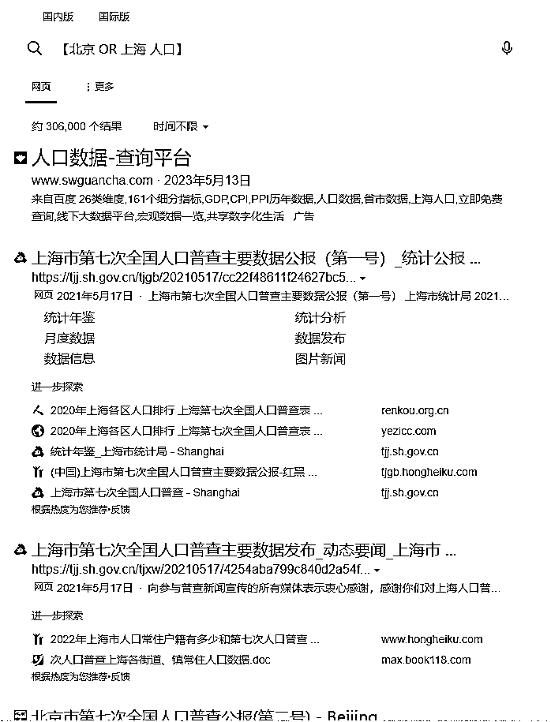
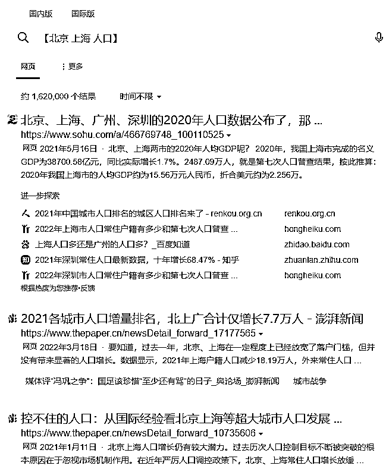
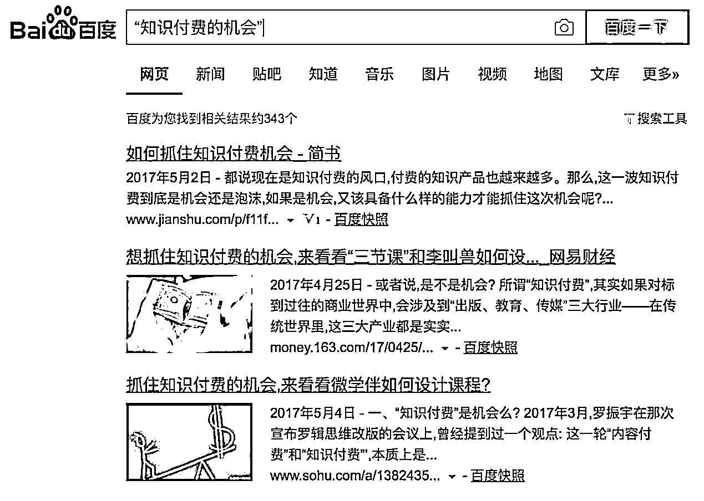
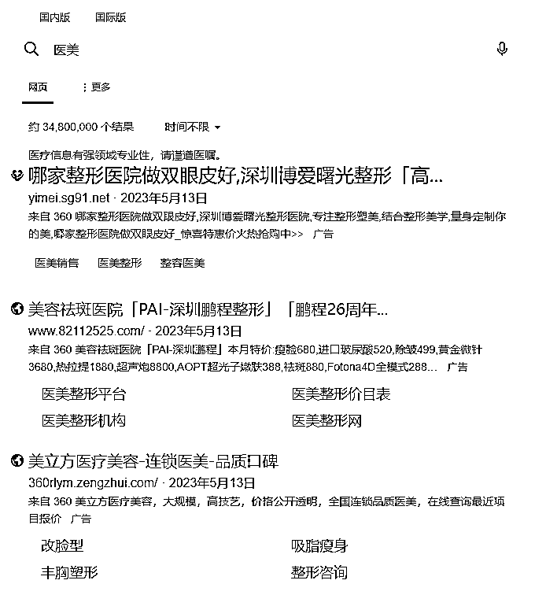
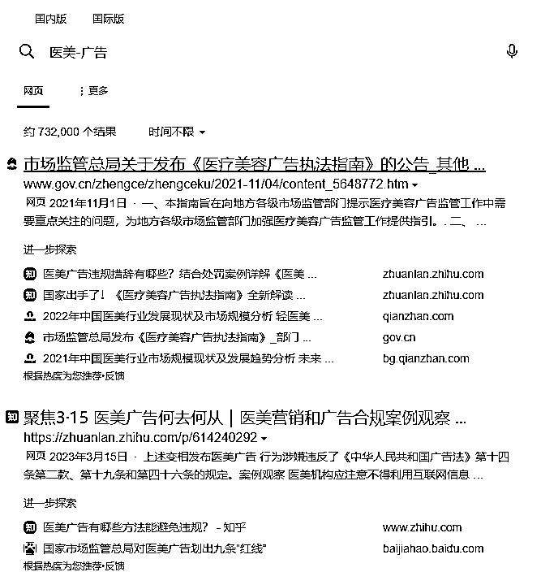
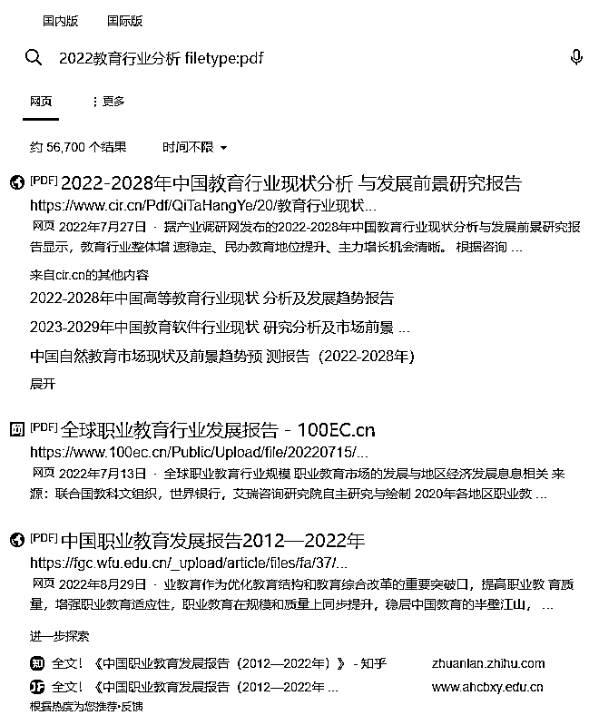
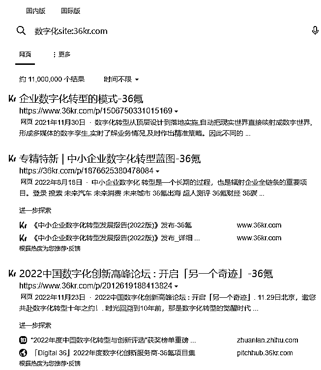
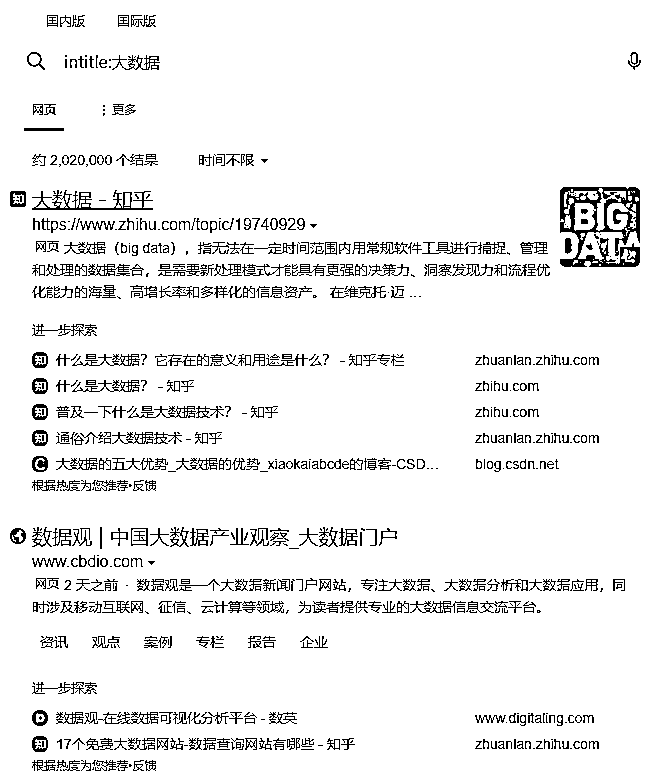
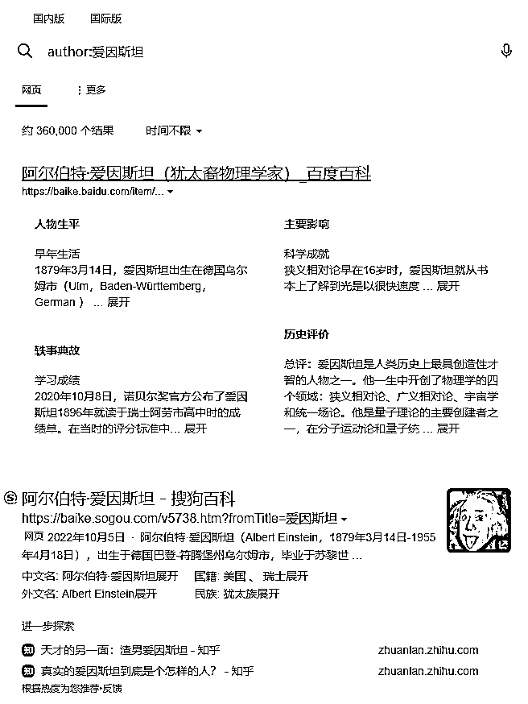

来源：https://pu6uadh9h1.feishu.cn/docx/JRCndzVSfof9qtx6HUqc1rtvnjd
9月参加了AI写作航海，发现要想让AI写出好文章，最快速最关键的方法是找到优质的文章投喂给AI，但总是找不到满意的文章，或者搜索时出现的结果不精准，而且还有很多广告，严重影响效率。
无奈之下，突然想到之前有看过一些搜索技巧，运用得好能快速找到自己想要的内容。
为了方便掌握这些技巧，一口气把全网提到的搜索技巧全都整理汇总起来。
既然整理了，就想着圈友可能也需要，在此也分享给大家，希望对大家有帮助。
以下就是汇总的一些搜索技巧，如果你还知道其他的技巧，欢迎补充。
比如你想知道2022年中国人口是多少，你可以直接输入“2022年中国人口是多少”，然后进行搜索，这样也能得到结果，但可能没那么精准。
换成输入【2022 中国 人口】，然后搜索，结果会更加精准。（注意：每个关键词后要加空格）
虽然现在的搜索引擎相对更加智能，也能很好的识别搜索的问题，但总的来说，使用中括号【】+关键词的方法会更加精准、方便。
中括号【】+关键词，搜索引擎默认是AND的关系。比如你搜索【北京 上海 平均工资】，得到的结果是同时提到北京和上海的文章。
如果你想问的问题是北京和上海这两个城市分别的平均工资，这时你就需要用到OR，直接搜索【北京 OR 上海 平均工资】，得到的结果就是这两个城市各自平均工资的文章。


如果你输入“知识付费的机会”，加不加双引号差别是巨大的。不加的话会自动把知识付费、的、机会拆开来，找到的内容很散。而双引号是，只有包含“知识付费的机会”连在一起完整的几个字的内容才能显现。

-号就是不要包括在关键词里，比如输入“苹果手机 -(iPhone6)”，找出来的内容就自动跳过了所有Iphon6的内容。
+正好相反，就是务必要有这些内容才能找到。
比如，只是单纯搜索医美，就会出现大量广告，如果再加上“-广告”，也就是搜索“医美-广告”，广告就会自动被屏蔽。


搜索“2022教育行业分析 filetype:pdf”，搜出来的结果已经是PDF文档。

在百度或google中键入“大数据 空格 site:sina.com”,则在sina.com搜索有关大数据的一些资料信息。这个特别适用定位搜索源（注意网站名称也不用加www；冒号是英文的，前后都没有空格。）

在百度键入“大数据”有一个亿的搜索量，但如果输入“intitle:大数据”，那么只有标题中含有“大数据”网页才会出现，只有8400个，一下少了近一万倍。


•豆瓣：书籍、电影
•知乎：职场问题
•B站：二次元、学习类视频
•抖音快手：短视频相关
•淘宝/京东/拼多多/闲鱼：商品相关
•百度百科：名词解释
•百度问答/百度知道：生活问答
•就诊问问/丁香医生：健康/疾病科普
•公众号：优质内容/资讯
•微博：热点聚集地
•小红书：生活经验
•浏览器/垂直聚合导航网站：各种信息
•知识星球/得到/微信读书/混沌/喜马拉雅：高质晕职场知识
•大众点评/美团/饿了么：地方美食
•百度地图/高德地图：交通信息
•极客时间：技术知识
•链家/贝壳/自如：买房租房
•爱企查/企百查/天眼查：企业信息
1、分析某个行业/某家公司
•百度搜素/36氨/虎嗅
2、快速学习某个技能
•豆瓣读书/知乎/B站
3、了解招聘情況
•Boss直聘/拉勾/智联招聘/前程无忧
4搜泰某家公司/某个产品/某个服务的用户评价
•淘宝/京东/小红书/微博
5、搜集某个KOL/某个公众号等的作品
•知乎/公众号/B站
6、搜集某个问题的答案
•知乎/B站/抖音
如果觉得有帮助，请给我多多点赞 o((≧▽≦o)
也非常欢迎大家补充更多搜索技巧